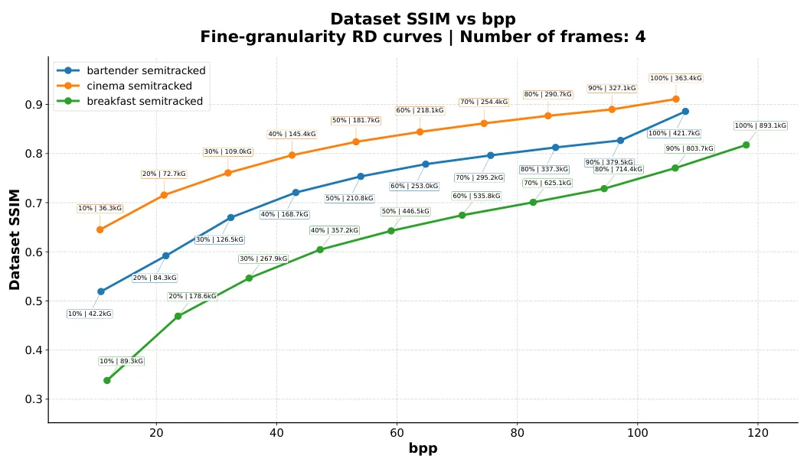
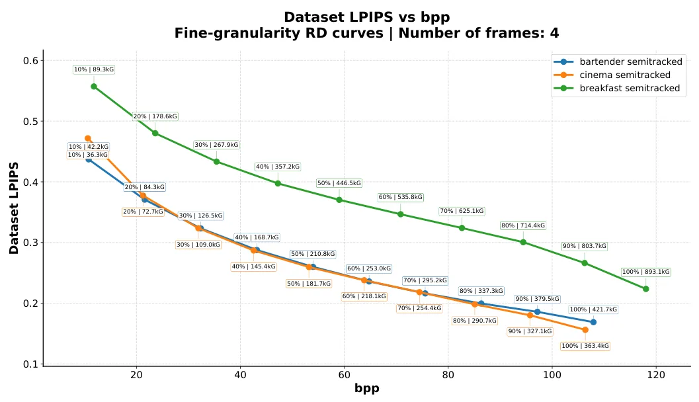
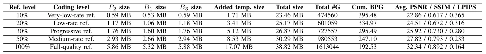
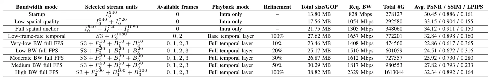

SplatStream：用于自适应三维场景流媒体的细粒度可伸缩 Gaussian SplattingSplatStream: Fine Granular Scalable Gaussian Splatting for Adaptive 3D Scene Streaming
对大规模 3DGS 地图分层和边缘传输有工程启发；摘要缺少 bitrate、latency、quality 与 decoder cost 量化，也未覆盖在线地图更新。
一句话工作总结
通过质量/分辨率分层、时空预测和重要性 packetization，把 dynamic 3DGS 接入 MPEG-DASH 式自适应渐进传输。
摘要
Dynamic 3DGS 的表示体积和帧间冗余给自适应传输带来压力。SplatStream 将 GS scene 分解为质量层与分辨率层，使用 inter-layer predictive coding 实现 scalability，并在时间维引入 B-frames 形成 temporal quality scalability。轻量 cross-layer transformer 同时承担跨层与时间预测；volume-opacity importance measure 用于细粒度 Gaussian packetization，使视觉重要 primitives 更早传输并渐进增强。最终 bitstream 被映射到 MPEG-DASH compatible sub-representation，以在带宽变化条件下支持细粒度、自适应、低延迟的动态 Gaussian 内容传送。
Dynamic 3D Gaussian Splatting (GS) enables high quality real-time rendering for immersive media, but its large representation size and frame-wise redundancy create significant challenges for adaptive streaming. This paper presents SplatStream, a fine granular scalable Gaussian splatting framework for dynamic 3D scene delivery. The proposed method decompose the GS scenes into quality and resolution layers, and introduces inter-layer predictive coding to achieve scalability. For temporal direction, B-frames are introduced to have temporal quality scalability. A lightweight cross-layer transformer based predictor is utilized for both cross layer and temporal predictions. In addition, a volume-opacity based importance measure is used for fine-grained Gaussian packetization, allowing visually important primitives to be transmitted earlier for progressive refinement. Finally, the scalable GS bitstream is mapped to an MPEG-DASH compatible sub-representation structure, enabling fine granular adaptive, low-latency delivery of dynamic Gaussian splatting content under bandwidth-varying conditions.
中文解读摘录
- 作者：Muhammad Talha, William Gordon, Sajid Umair, Anique Akhtar, Joel Jung
- 价值判断：把 dynamic GS 分成质量/分辨率层，用跨层和时间预测、B-frames 与重要性 packetization 支持 progressive delivery，可借鉴到大规模 3DGS 地图分层和边缘传输。
- 结果与边界：bitstream 映射到 MPEG-DASH sub-representation，但摘要没有给出 bitrate、latency、quality 或 decoder cost 数字；还需确认随机访问、丢包恢复和在线地图更新能力。
- 链接：arXiv · PDF
图表/页面预览

{kind=link}

{kind=link}

{kind=link}

{kind=link}
